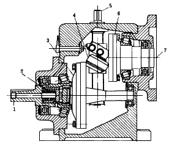
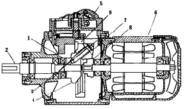
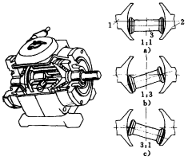
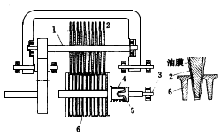
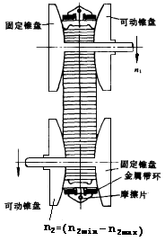
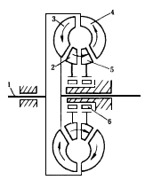
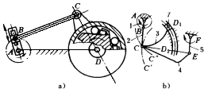

| 无级变速传动机构 |
机构示意图 |
机构特性简介 |
 |
���� 图中输入轴7与驱动盘6为一体作主动件，用摩擦力通过双圆锥滚轮4带动从动盘3和输出轴1。为减少滑转，在输出轴1上安装压紧弹簧2，增加滚轮与圆盘间的压力。当旋转调速丝杠5，可调节滚轮4的位置，在铅垂方向移动滚轮实现无级速度调节，其传动比最大可达到6～10，传动效率可达95％，传动功率为4kw。如采用两个滚轮传动功率可提高至20kw。
|
|
 |
����图中以摩擦圆锥代替齿轮的行星轮系传动机构，由电动机6驱动 中心圆锥摩擦轮8，通过行星摩擦圆锥7带动行星定位器4、加压器1和输出轴2。行星圆锥7的外侧锥面与不转动的滑环9内侧面接触，用速度控制轮5改变滑环9的轴向位正。可改变行星定位器及输出轴的转速。图示机构可得到较大的无级变速范围，其主、从动轴的传动比达4～24。
|
 |
����图中在同一轴线上的主、从动球面圆盘1、2之间，装有球形端面的 偏置滚轮3。通过操纵机构改变滚轮的角度，得到无级变速（增速或减速）。当滚轮3中心线与两圆盘1、2的中心线平行时（如图a），则主、从动盘等速；当滚轮与主动盘的接触点远离中心线（如图b），则为增速；反之，滚轮与从动盘接触点在大直径处，则为减速（如图C）。为保持圆盘与滚轮间必需的接触压力，附设加载凸轮。该类型机构的传动比最高可达到9，效率接近 90％。
|
 |
����由三组主动圆锥圆盘2围着中间从动凸缘圆盘6组成，图中仅表示其中一组。这类装置中，金属与金属之间不直接接触。在传动中互相夹持的圆盘被油涂敷而形成表面油膜，在各接触点处依靠凸缘盘所施加的轴向力，挤压油膜使其正压力增加，主动圆锥盘2在剪切高粘度油膜分子的同时将运动传给从动凸缘盘6，其传动效率可达85％以上。圆锥圆盘2可在花键轴1上作轴向移动。
����无级变速是通过主动圆锥盘向从动凸缘盘径向靠 近或离开实现的。输出轴3上装有弹簧4和凸轮5，由弹簧的弹力经常压住凸缘盘。这种装置的传动功率可达6kW，甚至更大。冷却方式在小型装置上采用气 冷．大型装置用液冷。滑转率在额定载荷下，高速时为l％、低速为3％。
|
 |
����（Continuosly Variable Transmission），如图所示，它由上部主动锥盘形成的V形槽通过金属带摩擦片驱动下部从动锥盘同向转动。主、从动锥盘各有一盘固定，另一盘可作轴向移动，改变金属带与锥盘接触的节圆半径，达到无级变速传动的要求。
����金属带由相互挤推的V形薄片状摩擦片和若干很薄的金属带环联接而成，通过几百件摩擦片与主、从动锥盘的摩擦而传递转矩，金属带坏承受较大的张力和上亿次的弯曲。一般由10片左右厚约0.2mm的无缝环带叠套一组，各环带间有严格公差要求以求均载， 两组金属环带分别嵌人摩擦片两侧平槽内。
����主、从动锥盘各设对轴固定的锥盘和可动锥盘，动盘由液压或电动控制作协调的轴向移动，使金属带作整体平移，改变锥盘与摩擦片接触摩擦节圆，达到无级变速传动。
荷兰DAF公司、VDT公司率先于70年代将 CVT金属带式无级变速器应用于轿车上使用，得到可观的效益，现在已大量投放欧美、日本轿车市场，前景看好。
|
 |
����主动轴1带动泵轮4旋转，泵轮叶片搅动变矩器内的工作液推动输出涡轮3上的叶片，由涡轮输出转矩。视泵轮输入转矩与转速为常数，则涡轮输出转矩与其转速成反比，涡轮转速愈高，输出转矩愈小。构件2、5为导向轮，6为超越离合器。
����液力变速机构常与行星变速器串联使用，在汽车上作为自动变速机构。也称它为液力变矩器除图所示四元件式外，还有三或五元件式，它们结构简单效率高，且工作可靠无冲击。
|
 |
����图中以单向离合器代替曲柄摇杆机构中的摇杆固定铰链，当曲柄作 匀速转动时，摇杆通过单向离合器带动从动轴作单向脉冲转动。若改变曲柄长度或附加二级杆组，将获得脉冲式无级变速转动。
����图a，曲柄上的销轴B可在滑槽中滑动，借以改变曲柄长度。摇杆CD与超越离合器的外环固联，曲柄每转一周，摇杆CD转动一定角度。曲柄（或机架）的长度改变，摇杆CD的转角也随之改变，输出轴D作单向 脉冲间歇回转。
图b，多杆机构，铰链D在曲槽内固定在D1或D2位置，C绕D转动的轨迹分别为C"或C'。当主动曲柄1匀速转动时，通过滑块7在曲槽内位置的改变（即改变机架AD的长度），使输出杆5实现变速。
����一个曲柄摇杆机构带动一单向越离合器，输出的单向脉冲转动是极不稳定的，为减少脉冲的不均匀性，常采用多相（3～5相）并列，提高输出轴的均匀性。这种机构简单可靠、变速供稳定、停止和运行时均可进行调节，适用于中、小功率（约10kw以下）、中低速（40～ 1000r／min）的减速器上，例如用在机床进给、搅拌机、 轻工包装、食品等机械中。
|